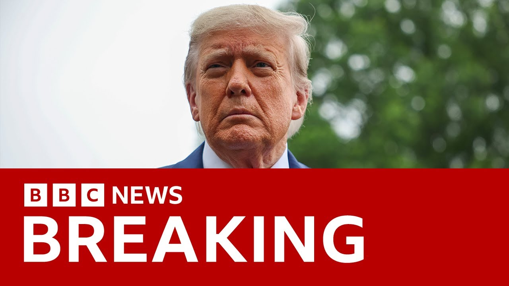

【BBC News 20250702 美国参议院共和党以微弱优势通过特朗普的“又大又美”法案】
Summary: The US Senate narrowly passed Trump's "One Big Beautiful Bill Act," with Vice President JD Vance casting the tiebreaking vote. The bill, containing key Trump agenda items like immigration enforcement, military spending, and tax cuts, now returns to the House, where it faces challenges. Trump celebrated the vote, while critics, including Elon Musk, opposed it over debt concerns.
摘要： 美国参议院以微弱优势通过特朗普的“又大又美”法案，副总统JD·万斯投下决胜票。该法案包含特朗普的核心议程，如移民执法、军事开支和减税，现退回众议院审议，面临阻力。特朗普对此表示庆祝，而批评者（如埃隆·马斯克）则因债务问题反对。

⏱️ Estimated Reading Time: 6 min
📚 四级生词 📚 六级生词 📚 雅思生词 📚 托福生词 📚 专八生词 📚 SAT生词 📚 考研生词 📚 GRE生词 📚 高考生词
But we also have news of another key vote, this time across the Atlantic in the United States, where the US Senate has just passed President Trump's so-called One Big Beautiful Bill Act.
但我们还有另一项关键投票的消息，这次来自大西洋彼岸的美国，美国参议院刚刚通过了特朗普总统所谓的“又大又美”法案。
Uh, Vice President JD Vance cast the tiebreaking vote for it to go through the Senate.
副总统JD·万斯投下决胜票，使该法案在参议院通过。
That's after three Republicans along with every Democrat voted against the bill.
此前，三名共和党人和所有民主党人投票反对该法案。
It is legislation which contains key elements of Donald Trump's agenda.
这项法案包含了特朗普议程的核心内容。
And the bill now goes back to the House of Representatives for further consideration where it is very likely to face something of an uphill battle to get uh all the Republicans there on board ahead of Donald Trump's self-imposed deadline which is July the 4th.
该法案现退回众议院进一步审议，很可能面临一场硬仗，以在特朗普设定的7月4日截止日期前争取所有共和党人支持。
Let's talk again to our North America correspondent Anthony Zurker who's with me in the studio because he's visiting London at the moment.
让我们再次连线北美记者安东尼·祖克，他目前正在伦敦访问，就在演播室与我一起。
So good to have you with us.
很高兴你能来。
Um well we've already had Donald Trump's reaction to this haven't we?
嗯，我们已经知道特朗普对此的反应了，对吧？
We have. He said it's music to my ears.
是的。他说这“让我心花怒放”。
obviously is very pleased by this.
显然他对此非常满意。
It was a big hurdle for this bill to overcome getting all the senators to agree.
让所有参议员同意是该法案面临的一大障碍。
There were four no votes.
有四张反对票。
It it seemed for all of today. They finally twisted some arms.
今天一整天似乎都在努力。他们最终说服了一些人。
Lisa Marowski, the senator from Alaska, switched over to their side.
阿拉斯加州参议员丽莎·马洛夫斯基转向支持他们。
They added provisions that gave some subsidies on health insurance to poor Alaskans and that won her over.
他们增加了为阿拉斯加贫困人口提供医疗保险补贴的条款，从而赢得了她的支持。
Uh and so now, as you mentioned, goes back to the House of Representatives.
呃，现在如你所言，法案退回众议院。
They had already approved it one time, but now they're going to have to deal with these changes that the Senate put in.
他们此前已批准过一次，但现在必须处理参议院加入的修改内容。
Just explain to us once again why, you know, he calls it, they call it the big beautiful bill, what what is in it?
请再解释一下，为什么他们称之为“又大又美”法案，它包含什么内容？
Why is it so central to Donald Trump's presidency?
为什么它对特朗普的总统任期如此重要？
Well, Well, there was a decision made months ago that to get Donald Trump's legislative agenda through, all the things he promised on the campaign trail last year, they were going to package it into one big beautiful bill.
嗯，几个月前决定将特朗普的立法议程——他去年竞选时承诺的所有内容——打包成一项“又大又美”的法案。
They're going to do this all in one go, which presented a certain number of challenges because of everything contained in here.
他们打算一次性完成，但由于法案内容庞杂，这带来了一些挑战。
And there'd be people who had problems with different things and then would pick it apart.
有些人会对不同条款有异议，进而试图拆解法案。
But it contains the heart of Donald Trump's agenda.
但它包含了特朗普议程的核心。
That's a boosting by $70 billion immigration enforcement on border walls and new detention centers and new immigration officers.
包括追加700亿美元用于移民执法，如修建边境墙、新拘留中心和增聘移民官员。
over a hundred billion dollars in new military spending for this Golden Dome missile defense that Donald Trump talks about and making tax cuts that Trump and the Republicans passed in his first term permanent and adding new tax cuts uh for no taxes on on tip income, no taxes on overtime income that Donald Trump promised uh while he campaigned last year.
还有逾千亿美元的新军事开支用于特朗普提到的“金穹”导弹防御系统，将特朗普和共和党在其首个任期通过的减税政策永久化，并新增减税，如免除小费收入和加班收入的税收——这是特朗普去年竞选时的承诺。
So, all of it is bundled up into one thing.
因此，所有内容被打包成一项法案。
It's paid for in part by cuts to some social programs like Medicaid, which is a health insurance program for lowincome Americans.
部分资金来自削减医疗补助等社会项目，这是为美国低收入群体提供的医疗保险。
And it adds about $3 trillion to the national debt, which is one of the reasons some senators like Ran Paul had objections to it.
该法案将增加约3万亿美元国债，这也是兰·保罗等参议员反对的原因之一。
And and And and also Elon Musk, you know, the richest man in the world, one of Donald Trump's most fervent supporters, or he was.
还有埃隆·马斯克，你知道的，他曾是特朗普最狂热的支持者之一。
Um, not anymore because he doesn't like this bill at all.
嗯，现在不再是了，因为他完全不喜欢该法案。
No, he said it adds way too much to the the national debt, that the interest payments on the debt are going to take up a bigger and bigger piece of America's government's expenditures.
他说这会大幅增加国债，债务利息将占据美国政府支出的越来越大份额。
Uh Trump countered by saying what he really cares about were the the environmental subsidies for electric cars and for his space program because those were things that got cut as well.
特朗普反驳称，他真正关心的是电动车和太空计划的环境补贴，因为这些也被削减了。
And so once again, we've seen a renewal of the feud between Donald Trump and Elon Musk right on the eve of of this vote.
因此，我们再次看到特朗普与马斯克在这场投票前夕重新爆发争执。
Although despite Elon Musk saying that anyone who voted for this was making a huge mistake, enough Republicans came through in the Senate in the
尽管马斯克称投票支持该法案的人犯了大错，但参议院仍有足够多的共和党人支持通过。